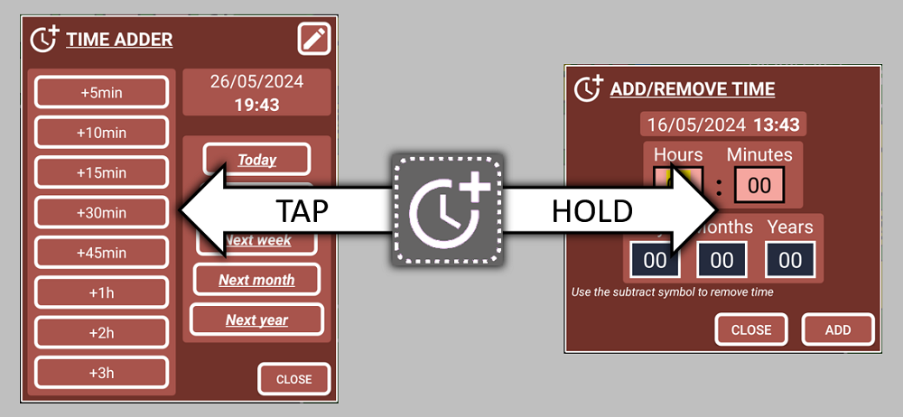
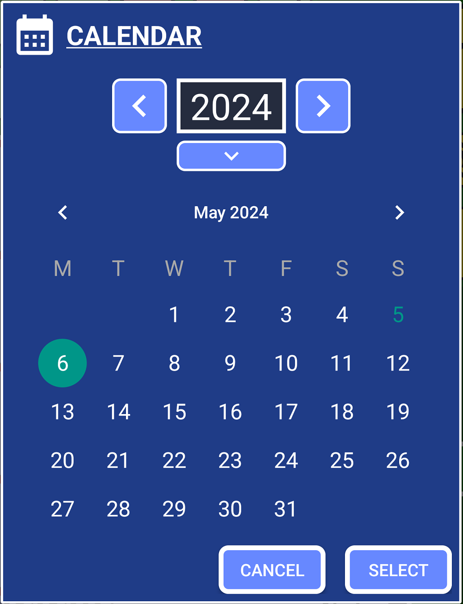

Let’s create a record to register an event that happened in the past (present is also considered past). It could be something you ate or drank, money you just spent on something, or something that just happened that you want to keep track of.
Why I will record something in the past? Because then you can use the search system to find when something happened, or you can group records to draw conclusions from them. You will be able to see what you eat, when you eat, when it was last time you ate, how often you eat (as time between records when using the search system)
The more you add to the app, the more you will learn about yourself and the easier it will be to improve every day.
1. Open SECURElogBook and go to the main window, with blue background:

2. Press the button (I), to add a new record/task.
3. Once the creator window (green background) is opened we were able to create our record/task:

The small list with all the records (K) will show only records that match or follow the moment selected by time and date (D and F).
4. By default, the record time is set to the present and the task is set as not completed. That is the reason why the record buttons (H, I, J) are yellow.
When creating a record it is useful to have the current time set as the time of our record by default. Note that the phone time is the same as our record, 21:19. Thanks to that we can easily add or subtract time when we use the button to open the windows to help us manage time:

5. Add the text inside the text box. If you save a record/task with no text, the program will add “NO TEXT” by default.
6. Setup the time. In SECURElogBook you can add time manually or you can use a window. The text boxes (D) are used to add hours (left) and minutes (right). If you want to use the window:
Hold button (E) to add not fixed values:

This window will allow to add negative values.
You can press button (C) to set the record with the current time.
7. Select the date by pressing on the date button (F).

To remove a year from the current one, press the left arrow. To add a year, press the right arrow. To enter a year value, press the down arrow.
Every time the date or time changes a message will let you know the time between the present and the new set time. The background colour of that message will help you to double check what you doing:
. Black = past.
. Red = today.
. Blue = tomorrow.
. Green = beyond the day after tomorrow.
Also, the background colour of the date will blink if you change the date.
8. Because we are recording an event that happened the record must be set in the past. When we set our record to a moment in the past, the record buttons (H, I, J) will turn black to indicate the record is set in the past.
Records that belong to the past do not have alarms (blacks and yellows).
The record buttons (H, I, J) will change depending on if a record is set in the future or the past. But also, if the record is completed or not.
. Past:
Completed
. Future:
Completed
The color-coded system will give you information visually, making things easier:
. Dark = Completed records.
. Blue = Future records.
. Yellow = Missing records, that you should review as soon as possible.
9. We have set the time of our record in the past, now we must indicate that we have completed it. To indicate that the record is completed we must press the button (I) to turn the record buttons (H, I, J) black.
The colour of the record buttons (H, I, J) is like a preview of how the record we are creating will look like.
10. Now that we have a black record we can save it, by pressing the button (H).
11. If the records buttons turn red, is because there is already a record set with that date and time. That means you cannot save your record there. This record with the same time, will be the first one in the list or records. If that happens, simply select another time to save the record.
12. Save the record by pressing the button H. You will see a confirmation message with black background:
. Black = past.
. Red = today.
. Blue = tomorrow.
. Green = beyond the day after tomorrow.
Congratulations you just saved your first event.